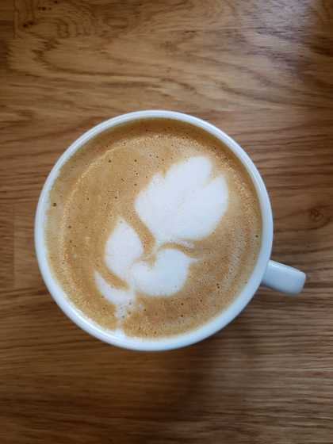
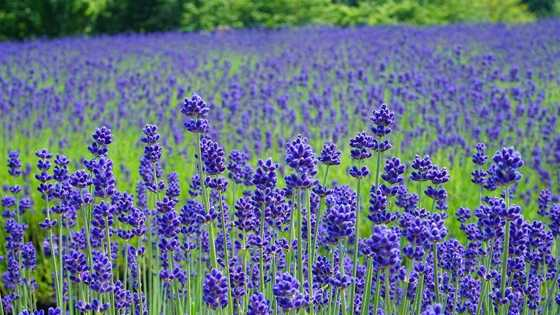
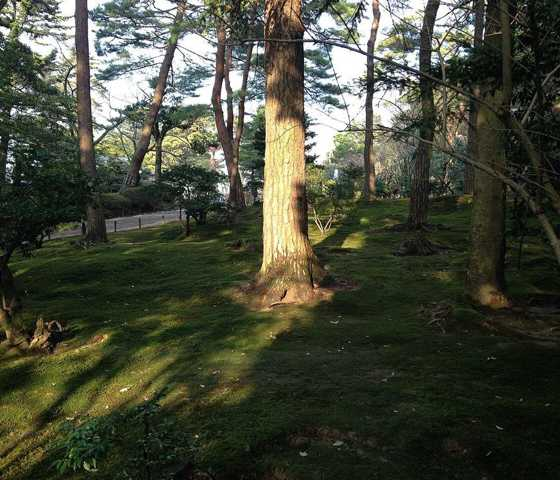
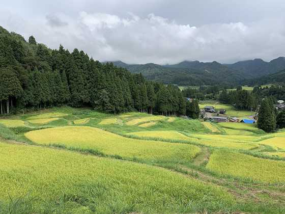
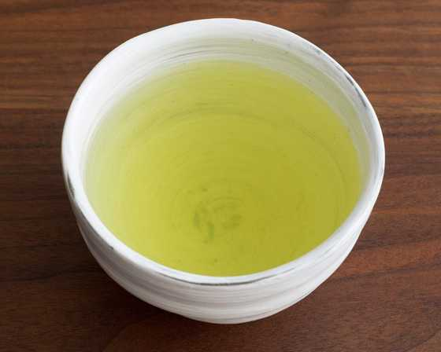

山口県美祢市秋芳町・秋芳洞商店街の入口
晴れた空の「天色」と、
弁天池の水のカフェ。
あまいろCafeは、澄んだ空の青を表す「天色」にちなんだ名前のカフェ。名水百選の弁天池の湧水を、ドリンクに使っています。
メニューを見るお店の由来・想い
空の色と、池の水から。
- 店名は「天色」にちなむ
- 弁天池の湧水を使用
- 弁天池の水の琥珀糖
紹介記事によると、店名は晴れた空の澄んだ青色「天色」にちなみ、ドリンクに使う弁天池の湧水の「天」とも結びついているそうです。オーナーの梶井竜治さんは美祢市出身で、市内で12年間飲食業を営んだのち、秋芳洞商店街の空き店舗を紹介されたことをきっかけにカフェを始めました。2021年1月11日のオープンです。
当初はテイクアウトのみの予定でしたが、要望を受けて店内に椅子を数脚設けたと伝えられています。弁天池の水を使った手作りの琥珀糖には、緑(弁天池)・赤(池に生えるベニマダラゴケ)・白(秋吉台の石灰岩)の3色があるそうです。
情報源: 山口宇部経済新聞(2021年2月) / おいでませ山口へ(山口県観光サイト)
上記以外の言い回しは制作側の表現です。記事の掲載時期から時間が経っているため、現在の内容はInstagramでご確認ください。




口コミ
こんな声が届きそうです。
商店街の入口で、水色のカフェを見つけて立ち寄りました。歩き疲れた体に冷たいドリンクがうれしかったです。
琥珀糖がきれいで、お土産にしたくなりました。色を眺めているだけで楽しい気分になります。
テイクアウトでも、座ってひと息つくのもよさそう。観光の合間にちょうどいい距離感のお店です。
口コミは制作側が作成したイメージ例であり、実際のお客様の声ではありません。
写真クレジット
写真はすべてフリー素材で、縮小・切り抜きなどの加工をしています。ライセンス: CC0 / CC BY 2.0 / CC BY-SA 4.0
| 写真(題) | 作者 | ライセンス | 撮影地 |
|---|---|---|---|
| チョコレートケーキとコーヒー(images/cake-coffee.jpg) | Andy Li | CC0 | 英国 |
| ラテ(images/latte.jpg) | Andy Li | CC0 | 英国 |
| ラベンダー畑(images/flower-field.jpg) | 掬茶 | CC BY-SA 4.0 | 秋田県美郷町 |
| 苔むした庭(images/moss-garden.jpg) | そらみみ | CC BY-SA 4.0 | 金沢・兼六園 |
| スコーン(images/scones.jpg) | Kolforn | CC BY-SA 4.0 | 英国 |
| フルーツと白玉のデザート(images/dessert.jpg) | Tail furry | CC BY-SA 4.0 | 新潟県三条市 |
| ケーキ(images/cake-pistachio.jpg) | Andy Li | CC0 | 英国 |
| いちごのタルト(images/tart.jpg) | Kirti Poddar | CC BY 2.0 | インド |
| マカロン(images/macarons.jpg) | Benoît Prieur | CC0 | フランス |
| コーヒーとケーキ(images/coffee-cake.jpg) | Stephanie McCabe | CC0 | 米国 |
| 赤いカップのラテ(images/cup.jpg) | Bex Walton | CC BY 2.0 | 英国 |
| コーヒーカップ(images/coffee-cup.jpg) | Edward | CC0 | ドイツ |
| お茶(images/tea.jpg) | Difference engine | CC BY-SA 4.0 | 京都府宇治 |
| 棚田(images/field.jpg) | Tail furry | CC BY-SA 4.0 | 新潟県三条市 |